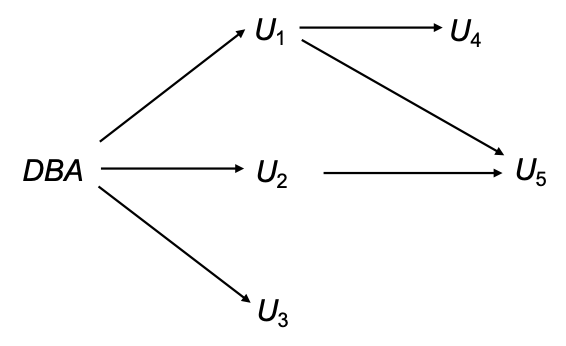

SQL 进阶
SQL 数据类型与模式
数据类型 ：
内置数据类型
用户定义数据类型
结构化数据类型 ：
SQL CREATE TYPE Address_Type AS (
street VARCHAR ( 50 ),
city VARCHAR ( 20 ),
zip_code CHAR ( 6 )
);
非重复类型 ：基于内置基本类型创建的独立新类型
SQL CREATE TYPE person_name AS VARCHAR ( 20 );
CREATE TABLE student (
sno CHAR ( 10 ) PRIMARY KEY ,
sname person_name , -- 使用自定义类型
ssex CHAR ( 1 ),
birthday DATE
);
DROP TYPE person_name ;
域
SQL CREATE DOMAIN Dollars AS NUMERIC ( 12 , 2 ) NOT NULL ;
CREATE DOMAIN Pounds AS NUMERIC ( 12 , 2 );
CREATE TABLE employee (
eno CHAR ( 10 ) PRIMARY KEY ,
ename VARCHAR ( 15 ),
job VARCHAR ( 10 ),
salary Dollars , -- 使用 Dollars 域
comm Pounds -- 使用 Pounds 域
);
Warning
域不是强类型 ，它们只是对数据进行约束，可以和基本数据类型交互
但是 type 是强类型，它不能和基本数据类型交互（不能进行赋值）
大对象 ：如照片、视频、CAD文件等
BLOBCLOB当查询返回大对象时，返回的是指针 ，而不是大对象本身
SQL CREATE TABLE students (
sid CHAR ( 10 ) PRIMARY KEY ,
name VARCHAR ( 10 ),
gender CHAR ( 1 ),
photo BLOB ( 20 MB ), -- 定义 20MB 上限的二进制大对象
cv CLOB ( 10 KB ) -- 定义 10KB 上限的字符大对象
);
完整性约束
作用 ：完整性约束用于防止意外破坏数据库 ，确保对数据库的授权更改不会导致数据一致性丢失
分类 ：实体完整性、参照完整性和用户定义的完整性约束
完整性约束是数据库实例必须 遵循的规则
完整性约束由数据库管理系统 （DBMS）
域约束
单一表上的约束 ：Not null (非空)、Primary key (主键)、Unique (唯一)、Check (P)
check 子句允许限制域 ：
SQL CREATE DOMAIN hourly - wage NUMERIC ( 5 , 2 )
-- 为约束命名为 value-test，并设置校验逻辑：值必须 >= 4.00
CONSTRAINT value - test CHECK ( VALUE >= 4 . 00 );
CONSTRAINT value-test 子句是可选的，有助于指示哪个约束被违反了
参照完整性
参照完整性约束也称为子集约束
假设存在关系 r(A, B, C), s(B, D)，我们说 r 中的属性 B 是来自关系 r 的外键 ，r 称为参照关系 ，s 称为被参照关系
Warning
参照关系中外码的值必须在被参照关系中实际存在 ，或为 null
参照完整性仅在事务结束 时检查！
插入 ：向参照关系中插入元组，必须确保该外码的值在参照关系中存在删除 ：删除被参照关系中的元组，需要查看参照关系中引用该元组的集合，如果这个集合不为空，那么：
要么拒绝删除命令作为错误
要么必须删除参照关系中引用该元组的元组（级联删除是可能的 ）
更新 ：更新外键的值，需要进行与插入类似的检查
外键 ：
SQL FOREIGN KEY ( account - number ) REFERENCES account
-- 简写
acccount - number REFERENCES account
级联操作
SQL CREATE TABLE loan (
...
FOREIGN KEY ( branch - name ) REFERENCES branch ( name )
[ ON DELETE CASCADE ]
[ ON UPDATE CASCADE ]
...
);
ON DELETE CASCADE：如果删除了参照关系中的元组，则级联删除其在被参照关系中的引用 级联操作可以沿着约束链传递
但是如果中途存在约束违反，则整个级联操作的更改将被撤销
替代方案
ON DELETE SET NULL or ON DELETE SET DEFAULT
外键属性中的空值会使 SQL 参照完整性语义复杂化 ，最好使用 not null 来防止
如果外键的任何属性为 null，则元组被定义为满足外键约束 ！
断言
断言 是一个谓词，表达了我们希望数据库始终满足 的条件，用于多个关系 上的复杂检查条件
SQL CREATE ASSERTION < assertion - name >
CHECK ( < predicate > );
当做出断言时，系统在每次 可能违反断言的更新时测试其有效性
缺点 ：可能会引入大量开销 ，因此应非常谨慎地使用断言
示例 1
每个分支的所有贷款总额必须小于该分支的所有账户余额总和。
SQL CREATE ASSERTION sum - constraint CHECK
( not exists ( select * from branch B
where ( select sum ( amount ) from loan
where loan . branch - name = B . branch - name )
>
( select sum ( balance ) from account
where account . branch - name = B . branch - name )));
-- SQL 没有提供直接断言 for all X, P(X) 的构造，所以需要使用 exists
示例 2 请查看 PPT
触发器
触发器 是当数据库发生修改时，由系统自动执行 的语句
设计触发器机制时，必须指定触发器执行的条件 以及触发器执行时要采取的动作
SQL CREATE TRIGGER < trigger - name >
AFTER < event > ON < table - name >
REFERENCES < reference - table >
FOR EACH ROW
WHEN < condition >
BEGIN < action > END ;
触发事件 ：insert、delete、update
update 上的触发器可以限制到特定属性
SQL CREATE TRIGGER < trigger - name >
BEFORE UPDATE OF < column - name > ON < table - name >
...
可以引用更新前和后 的属性值：
REFERENCING OLD ROW AS <alias>：用于删除 和更新REFERENCING NEW ROW AS <alias>：用于插入 和更新
语句级 vs 行级触发器
语句级 ：FOR EACH STATEMENT
对于事务影响的所有行，只执行一次 触发器
过渡表 ：包含受影响行的临时表
REFERENCING OLD TABLE AS <alias>REFERENCING NEW TABLE AS <alias>
在处理更新大量行的 SQL 语句时效率更高
行级 ：FOR EACH ROW
触发器的执行次数等于影响的行数，为每个受影响的行执行单独的操作
授权
对数据库部分 的授权形式：读授权、插入授权、更新授权、删除授权
修改数据库模式 的授权形式：
索引授权：允许创建和删除索引
资源授权：允许创建新关系
修改授权：允许在关系中添加或修改属性
删除授权：允许删除关系
视图的授权
用户可以获得对视图的授权，而无需获得对视图定义中使用的任何关系的授权
创建视图不需要资源授权 ，因为没有创建真实的关系
视图创建者在视图上获得的权限，取决于其在底层基础表 上已有的权限
授权从一个用户到另一个用户的传递可以用授权图 表示（节点是用户，根是数据库管理员）
Example

授权图中的所有边必须是从数据库管理员出发的某条路径的一部分
如果 DBA 撤销对 U1 的授权，必须撤销对 U4 的授权；但是不得撤销对 U5 的授权 ，因为 U5 通过 U2 还有另一条来自 DBA 的授权路径
必须防止没有从根出发路径的授权循环 ：DBA 授予 U7 授权 -> U7 授予 U8 -> U8 授予 U7，DBA 撤销对 U7 的授权，必须撤销 U7->U8 和 U8->U7 的授权，因为不再有从 DBA 到 U7 或 U8 的路径
授予权限
SQL GRANT < privilege list >
ON < table / view >
TO < user list >
WITH GRANT OPTION ;
<user list>public（表示允许所有有效用户获得被授予的权限）、角色WITH GRANT OPTION权限传递 给其他用户权限的授予者必须已经持有对指定项的权限
角色
角色允许为一类用户指定通用权限 ，只需创建相应的角色一次
权限可以像授予用户一样授予角色或从角色撤销
角色可以分配给用户，甚至其他角色
SQL CREATE ROLE teller ;
GRANT SELECT ON account TO teller ;
GRANT teller TO mgr ;
撤销授权
SQL REVOKE < privilege list >
ON < table / view >
FROM < user list > [ restrict / cascade ]
restrictcascade
Tip
如果撤销的权限包括 PUBLIC，则除了那些被显式授予的用户外，所有用户都将失去该权限
缺点
SQL 不支持 元组级别的授权 e.g. 不能通过授权限制学生只查看他们自己成绩的元组
一个应用程序的所有最终用户可能被映射到单个数据库用户 ，造成身份丢失
在上述情况下，授权的任务落在了应用程序身上 ，SQL 不提供支持
优点 ：细粒度的授权（对单个元组）可以由应用程序实现缺点 ：授权必须在应用程序代码中完成，并且可能分散在整个应用程序中，检查是否存在授权漏洞变得非常困难 ，因为这需要阅读大量应用程序代码
审计追踪
审计追踪 是所有更改（插入/删除/更新）的日志 ，以及诸如哪个用户执行了更改、何时执行更改等信息
用途 ：跟踪错误/欺诈性更新
实现 ：可以使用触发器实现，但许多数据库系统提供直接支持
语句审计
SQL AUDIT < st - opt > [ BY < users > ] [ BY SESSION | ACCESS ] [ WHENEVER SUCCESSFUL | WHENEVER NOT SUCCESSFUL ]
<st-opt>BY <users>BY SESSIONBY ACCESSWHENEVER SUCCESSFUL
对象审计
SQL AUDIT < obj - opt > ON < obj > | DEFAULT [ BY SESSION | BY ACCESS ] [ WHENEVER SUCCESSFUL | WHENEVER NOT SUCCESSFUL ]
<obj-opt><obj>DEFAULT实体审计对所有的用户起作用
取消审计 ： NOAUDIT ...
查看审计结果
审计结果记录在数据字典表 sys.aud$ 中
也可从dba_audit_trail、dba_audit_statement、dba_audit_object中获得有关情况
访问权限 ：仅 DBA 用户 (SYSTEM) 可见
嵌入式 SQL
目的 ：弥补 SQL 在复杂计算和系统资源调用上的非完备性
宿主语言 ：嵌入 SQL 的编程语言（C, Java, 等）
基本用法 ： EXEC SQL <embedded SQL statement> END_EXEC
注 ：不同语言语法略异，如 Java 使用 # sql { ... }
单行查询
C // 声明宿主变量
EXEC SQL BEGIN DECLARE SECTION ;
char V_an [ 20 ], bn [ 20 ];
float bal ;
EXEC SQL END DECLARE SECTION ;
……
scanf ( “ % s ” , V_an ); // 读入账号, 然后据此在下面的语句获得 bn, bal 的值
EXEC SQL SELECT branch_name , balance
INTO : bn , : bal // 给宿主变量赋值
FROM account
WHERE account_number = : V_an ;
END_EXEC
printf ( “ % s , % s , % s ” , V_an , bn , bal );
……
:V_an, :bn, :bal 是宿主变量，可在宿主语言程序中赋值 ，从而将值带入 SQL宿主变量在宿主语言中使用时不加 : 号
单行更新
SQL ……
scanf ( “ % s , % d ” , an , & bal ); // 读入账号及要增加的存款额
EXEC SQL update account set balance = balance + : bal
where account_number = : an ;
……
多行查询
Step 1 ：用 SQL 指定查询并为其声明一个游标
SQL EXEC SQL
DECLARE c CURSOR FOR
SELECT customer_name , customer_city
FROM depositor D , customer B , account A
WHERE D . customer_name = B . customer_name
and D . account_number = A . account_number
and A . balance > : v_amount
END_EXEC
Step 2 ：OPEN 执行查询并生成结果集
Step 3 ：FETCH 将查询结果中一个元组的值放入宿主语言变量 ，并移动指针到下一行（重复调用以获得后续元组）
SQL EXEC SQL FETCH c INTO : cn , : ccity END_EXEC
Step 4 ：CLOSE 释放结果集占用的临时资源
SQL EXEC SQL CLOSE c END_EXEC
状态监测
SQL 通讯区，是存放语句的执行状态的数据结构，其中有一个变量 sqlcode 指示每次执行 SQL 语句的返回代码（success, not_success）
多行更新 ：通过将游标声明为 for update 来更新游标获取的元组
游标
C Exec SQL DECLARE csr CURSOR FOR
SELECT *
FROM account
WHERE branch_name = ‘ Perryridge ’
FOR UPDATE OF balance ; //
……
更新
C EXEC SQL OPEN csr ;
while ( 1 ) {
EXEC SQL FETCH csr INTO : an , : bn , : bal ;
if ( sqlca . sqlcode <> SUCCESS ) BREAK ;
…… // 由宿主语句对 an, bn, bal 中的数据进行相关处理 (如打印)
EXEC SQL update account
set balance = balance + 100
where CURRENT OF csr ;
// 或删除当前行
// EXEC SQL delete from account where current of csr
}
……
EXEC SQL CLOSE csr ;
……
动态 SQL
C // 定义动态 SQL 程序
char * sqlprog = “ update account
set balance = balance * 1.05
where account_number = ? ”
// 准备：将 SQL 程序编译成可执行代码
EXEC SQL PREPARE dynprog FROM : sqlprog ;
char v_account [ 10 ] = “ A_101 ” ;
……
// 执行：将参数绑定到 SQL 程序，并执行
EXEC SQL EXECUTE dynprog USING : v_account ;
动态 SQL 的本质 是将 SQL 语句视为一个字符串，在程序运行过程中动态构建 ，并通过 PREPARE 和 EXECUTE 两个阶段交给数据库处理
上述程序包含一个 ?占位符 ，用于替换在执行 SQL 程序时通过 USING
ODBC
ODBC 开放数据库互连 ：应用程序与数据库服务器通信的标准 API
特点
具有 DBMS 无关性 （不特定于某种数据库，而嵌入式 SQL 特定数据库）
不需要预编译
ODBC 接口定义的三种句柄类型 ：
环境句柄 HENV：整个 ODBC 会话的上下文，一个应用程序通常只有一个连接句柄 HDBC：建立在环境句柄之上，代表与特定数据库的会话，一个环境可以产生多个连接语句句柄 HSTMT：建立在连接句柄之上，用于执行具体的 SQL 语句，一个连接可以关联多个语句句柄
ODBC 编程
建立连接
SQL 执行阶段
分配语句句柄
C++ HSTMT hstmt ;
SQLAllocStmt ( hdbc , & hstmt ); // 为指定连接分配语句对象
直接执行 ：适用于仅执行一次的 SQL
C++ SQLExecDirect ( hstmt , szSqlStr , cbSqlStr );
szSqlStr：将要执行的 SQL 语句cbSqlStr：对应字符串的长度
有准备地执行 ：适用于需要重复执行多次的 SQL
C++ SQLPrepare ( hstmt , szSqlStr , cbSqlStr ); // SQL 语句准备函数
SQLExecute ( hstmt ); // SQL 语句执行函数
结果处理阶段 ：当执行 SELECT 语句后，需要通过以下步骤获取数据：
释放资源
释放语句句柄
C++ SQLfreeStmt ( hstmt , foption );
foption：指定选项（用 SQL_DROP 表示释放所有与该句柄相关的资源）
断开数据源连接
释放连接句柄
释放环境句柄
Example
C++ #include <iostream>
#include <sql.h>
#include <sqlext.h>
#include <string.h>
#include <stdio.h>
int ODBCexample () {
RETCODE error ;
HENV env ; /* environment */
HDBC conn ; /* database connection */
// 建立环境与连接句柄
SQLAllocEnv ( & env );
SQLAllocConnect ( env , & conn );
// 建立用户user与数据源的连接，SQL_NTS 表示前一参数以null结尾
error = SQLConnect ( conn , "MySQLServer" , SQL_NTS , "user" , SQL_NTS , "password" , SQL_NTS );
// --- Main body of program ---
char branchname [ 80 ];
float balance ;
int lenOut1 , lenOut2 ;
HSTMT stmt ;
// 为该连接建立数据区，将来存放查询结果
SQLAllocStmt ( conn , & stmt );
char * sqlquery = ( char * ) "select branch_name, sum (balance) from account group by branch_name" ; // SQL 语句
error = SQLExecDirect ( stmt , ( SQLCHAR * ) sqlquery , SQL_NTS ); // 执行sql语句,查询结果存放到数据区stmt，同时sql语句执行状态的返回值送变量error
if ( error == SQL_SUCCESS ) {
// 对stmt中的返回结果数据加以分离，并与相应变量绑定
SQLBindCol ( stmt , 1 , SQL_C_CHAR , branchname , 80 , ( SQLLEN * ) & lenOut1 ); // 第1项数据转换为C的字符类型：变量branchname
SQLBindCol ( stmt , 2 , SQL_C_FLOAT , & balance , 0 , ( SQLLEN * ) & lenOut2 ); // 第2项数据转换为C的浮点类型：变量balance
// 逐行从数据区stmt中取数据，放到绑定变量中
while ( SQLFetch ( stmt ) >= SQL_SUCCESS ) {
printf ( "%s %d \n " , branchname , ( int ) balance ); // 对取出的数据进行处理
}
}
// 释放数据区
SQLFreeStmt ( stmt , SQL_DROP );
// 断开连接并释放句柄
SQLDisconnect ( conn );
SQLFreeConnect ( conn );
SQLFreeEnv ( env );
}
JDBC
JDBC 是一个用于与支持 SQL 的数据库系统进行通信的 Java API功能
用于查询和更新数据，以及检索查询结果
还支持元数据检索 ，例如查询数据库中存在的各种关系，以及关系属性的名称和类型
与数据库通信的模型 ：
打开连接
创建一个 statement 对象
使用 Statement 对象执行查询以发送查询并获取结果
异常处理机制
Code
更新数据库 ：
Java try {
stmt . executeUpdate ( "insert into account values ('A_9732', 'Perryridge', 1200)" );
} catch ( SQLException sqle ) {
System . out . println ( "Could not insert tuple. " + sqle );
}
执行查询并获取及打印结果 ：
Java ResultSet rset = stmt . executeQuery ( "select branch_name, avg(balance) from account group by branch_name" );
while ( rset . next ()) {
System . out . println ( rset . getString ( "branch_name" ) + " " + rset . getFloat ( 2 ));
}
获取结果字段 ：如果 branchname 是查询结果的第一个参数，那么 rs.getString("branchname") 和 rs.getString(1) 是等效的
处理空值 ：
Java int a = rs . getInt ( "a" );
if ( rs . wasNull ()) System . out . println ( "Got null value" );
预处理语句 ：允许查询被编译并使用不同的参数多次执行
Java PreparedStatement pStmt = conn . prepareStatement ( "insert into account values(?,?,?)" );
pStmt . setString ( 1 , "A_9732" );
pStmt . setString ( 2 , "Perryridge" );
pStmt . setInt ( 3 , 1200 );
pStmt . executeUpdate ();
pStmt . setString ( 1 , "A_9733" );
pStmt . executeUpdate ();
注意
如果要存储在数据库中的值包含单引号或其他特殊字符 ，预处理语句可以正常工作；但如果直接创建查询字符串并执行，则会导致语法错误 ！
函数
MySQL 语法模板 ：需要注意修改 DELIMITER（定界符），否则编译器会将函数体内的分号视为结束标记
SQL DELIMITER //
CREATE FUNCTION function_name (
param1 datatype ,
param2 datatype
)
RETURNS return_datatype
[ DETERMINISTIC ] -- 明确函数是否总是返回相同的结果
BEGIN
DECLARE variable_name datatype ; -- 定义变量
SET variable_name = param1 + param2 ; -- 逻辑代码
RETURN variable_name ; -- 返回结果
END //
DELIMITER ;
PostgreSQL 语法模板 ：通常使用 $$ 作为字符串常量符号，并需指定编程语言（通常是 plpgsql）
SQL CREATE [ OR REPLACE ] FUNCTION function_name (
param1 datatype ,
param2 datatype
)
RETURNS return_datatype AS $$
DECLARE
variable_name datatype ;
BEGIN
-- 逻辑代码
variable_name : = param1 + param2 ;
RETURN variable_name ;
END ;
$$ LANGUAGE plpgsql ;
调用函数
SQL SELECT function_name ( column1 , column2 ) FROM table_name ;
2026年4月7日 18:39:39
2026年4月1日 09:48:31